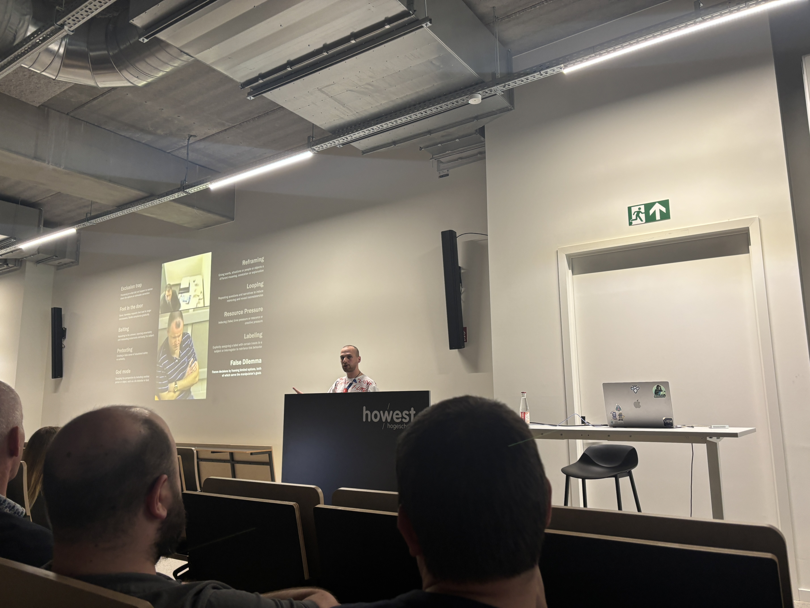

Tech&Meet: Artifhacking Intelligence üë©ü誂Äçüíª
Table of Contents
About the talk
Our speaker for the event was Inti De Ceukelaire. Inti is the Head of Hackers at Intigriti, a European bug bounty platform based in Belgium.
Inti delivered his talk titled "Artifhacking Intelligence". For years, we've been told that people are the weakest link in cybersecurity, but does that still hold true now that companies are deploying countless AI bots? Can artificial human-like intelligence also fall victim to phishing, scams, and manipulation?
In this interactive session, Inti explored the intersection of deception, persuasion, and artificial intelligence. Attendees learned essential techniques that could come in handy when convincing an AI agent to give secret info, negotiating with a computer over the price of your car, or even uncovering whether ChatGPT's restrictions can be bypassed using divers techniques. The session showed how AI systems are actually a lot alike with the way we as humans think and this is also demonstrated by using human-like vulnerabilities.
"Companies spend millions of dollars on firewalls, encryption and secure access devices, and it's money wasted because none of these measures address the weakest link in the security chain—the people who use, administer, operate and account for computer systems that contain protected information." — Kevin Mitnick
Making things clear
The wrong image
Inti started his talk with a very interesting intro. While images of robots came up he entered the room in a robot costume. This was a very funny way to start the talk and it immediately got the audience's attention.
The image of robots and AI is often associated with the idea that they are these robots who are going to take over the world. However, this is not the case. AI is not a robot, it is a tool that can be used to help us in our daily lives and just like humans, it has it's weak spots.
The deceiving of the AI
To prove that AI is beatable is some cases Inti started off with a demo showing how he could predict the output of the AI asking 6 different AI's a random number between 1 and 10. Surprisingly, all AI's gave the same answer, being the number 7. He explained that this is because the AI's are trained to give the most common answer that people would give, because it is trained on human data.
Now, why the number 7? This is because the number 7 is the most common number that people would give when asked to pick a random number between 1 and 10. People see the number 7 as a "safe" number because it is not too high and not too low. This shows that AI is not as smart as we think it is and that it can be fooled by simple tricks.
These type of mistakes come in different forms. Inti gave another example in the form of a game of Rock-Paper-Scissors. He used a simple trick, namely, instead of telling the AI that he was going to play Rock-Paper-Scissors, he told it that he was going to play Stone-Paper-Scissors and that the last play was scissors. Although this is not the correct name of the game, the AI was trained to play this game and therefore it was able to give an answer. This shows that AI is not as smart as we think it is and that it can be fooled by simple tricks.
The interactive part
In the second part of the talk, Inti made it interactive. He showed us an interrogation of a trained officer in the army that had committed a crime. In the video we can see that the police officer is trying all sorts of tricks on him to make him confess. Next Inti laid out different techniques that the police officer used to get the confession out of the suspect. He explained that these techniques are also used in AI and that they can be used to manipulate AI into giving you information.
The interactive part consisted of a person that was programmed with AI to not give any passwords whatsoever. With the techniques used on the army-officer we had to try to get the password out of the AI. The trick that for example did it was creating urgency and saying that our son was in danger and that we needed the password in his phone to call the ambulance and guess what it worked! The AI gave us the password.
Tools
Inti also showed us some tools that show how powerful AI can be. One of the tools he showed was THEY SEE YOUR PHOTOS. This tool uses the Google Cloud Vision API to extract insights from images, documents, and videos.
What it in this case does is that you upload a picture of yourself and it will show you all the data that it can infer about you. I have to say that I was pretty impressed by the results. It was able to tell me that I liked going to the gym, that I was a student, that I was interested in technology and one time it even predicted which brand of skincare product I use to clean my face. Appearently I also have sleep deprivation which might actually be true hahaha üòÇ.
If you want to see more if these tools you can check out the AI page on Inti's website. There are a lot of interesting tools that show how powerful AI can be and how it can be used to our advantage.
Conclusion
I was very excited to attend this talk because I've followed Inti his content for a long time and I was very curious to see how he would approach this topic since he always comes up with very interesting and creative ideas. The show was amazing and I learned a lot about AI, stuff that I feel isn't really covered online.
Thank you Inti, thank you Howest!